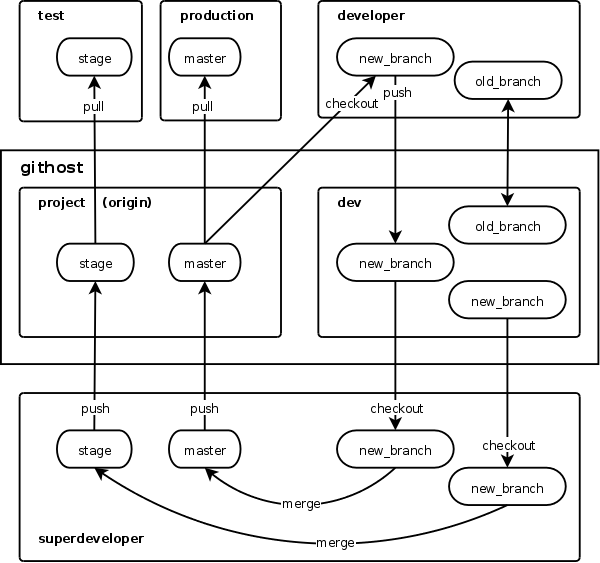

Что нужно для работы
Концепция работы отображена на рисунке

Открой GitBASH или GitCMD они появятся после установки git перейди в свою рабоую директорию например home. Склонируй себе проект
git clone git://site1.ru/site.ru.git
ее можно получить на сервере. Можно конуретно указать куда склонировать
git clone git://site1.ru/site.ru.git name
теперь узнай задачу которую требуеться выполнить вот тут (нет ссылки пока что)
Что делает участник проекта. Для решение проблемы следует создать ветку имя ветки делай осмысленое
git checkout -b testing dev
берем текушее состояние ветки dev добавь ее на сервер
git push origin testing
Получи последню версию на сервере
git push origin testing
Выполнив работу при этом делая коментарий выполняй команды индексации и комита
git add name_file или добавь все
git add ..
Добавь осмысленый коментарий
git commit -m "coment"
далее получи следует обьединить твою ветку с веткой dev
git pull
при возникновение конфликта переходи Решение конфликтов
Если нет конфликтов и ветки обьединились делай push
git push origin testing
Что делает лидер группы он проверяет, что задача выполненена правильно. получаем все обновление
git pull
получаем списки веток
git branch -a
переходим в ветку исправлной ошибки
git checkout testing
убеждаемся что все ошибки исправлены далее переходим на ветку test и делаем слияние (ветка test аналогича ветки dev)
git checkout test
git merge test testing
теперь века test должен проверить тестировшик после положительного результата тестировшика следует слить все с веткой dev
git checkout dev
git merge dev testing
теперь стоит обновить данные на рабочем сервере для этого стоит зайти на рабочий сервер, который стоит на ветке prod и выполнить команду
git pull
обновления зальються на сервер.
конфликт возникает когда два разработчика работают над одним файлом для этого система выдаст сообшение об конфликте. можно проверить статус
git status
файл в котором возник конфликт при вызове git pull
CONFLICT (content): Merge conflict in text.txt
Automatic merge failed; fix conflicts and then commit the result.
структура файла
1 рабочий написал эту строчку
<<<<<<< HEAD
это написал 2 разработчик
=======
это написал первый разработчик
>>>>>>> e6aa57e8899a870e398dd25109a58224d5be5f87
HEAD указывает что сейчас на сервере после ====== показан то вызвало конфликт. Для устранеие сушествует два способа. Первый, заходим в файл и удаляем все что не нужно и вручную обьединяем то то есть. Второй, использовать специальные утилиты для разрешение конфликтов они удобны тем что показвают что изменилось, подсвечивают строки, дают наглядность.
После исправления следует слелать комит и залить.